ADAPT Aggregate
ADAPT External
BoundaryAI
Chemical Retrieval
Cover Crop Model
CRP
CropAI
Cropland Data Layer
DEM
Elevation Index
eMODIS
Farmland Sales API
Federal Crop Insurance
Field Day
GuidanceLines
Harvest Date
HLS Service
Land Value AI
NAIP
Nutrient Parser
ObjectID
Operations
Planting Date
Polaris Soils
PRISM GDD
PRISM Precipitation
SSURGO Soils
Tillage Model
Variety Retrieval Service
YieldAI
»
Test
View page source
Test
¶
API
¶
Test
Setup
¶